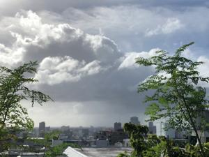
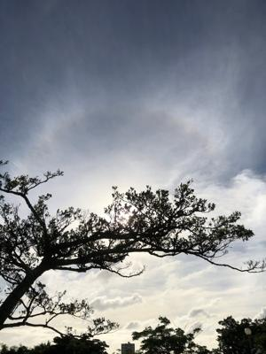
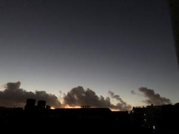

うるがいの話 ある日
最新: 保守【うるがいの話 ある日】とは 一日だけのプログです
『うるがいの話』の最新一日だけのプログで、通信料が少なく経済的だ。カニの画像をクリックすると全ての日付が載る『うるがいの話』サイトを表示します
|
|
【うるがいの話】 うるがい(ｳﾙｶﾞｲ urugai)とは、『もずくがに』の名前でとても大きくなります。 |
|---|---|
|
|
【カミマヤーの話】 猫のことを方言でマヤーといいます。カミマヤー（kamimayaa）とは、神の猫のことです。 |
|
【たながぁの音楽】 たながぁ（ﾀﾅｶﾞｰ tanagaa）とは手長えびのことで、何種類かあり大きいのは車 エビぐらいになります。 |

|
【ぶながぁの話】 ぶながぁ(ﾌﾞﾅｶﾞｰ bunagaa)とは、赤い髪の毛、赤い身体、そして身長は１ｍ２０ｃｍ ぐらい、川の蟹を食べているの目撃された。場所は沖縄県国頭郡大宜味村のと ある村僕の隣近所に住んでいる爺さんから、聞いた話です。 |
|
|
【ギーマの話】 ギーマ(giima)とは、山原の里山に咲くスズランに似た、 花を付けます。実は食べられます、 気が付くと口の周りが紫になっています。 |
2022年06月29日 (水）保守
18:35
  
昨日の夜、掛け電波時計の秒針が１２時を指したまま止まっている。何やら意
味がありそうである。取扱説明書を確認すると、電池が切れそうなので変えて
との合図らしい。早速、電池を替える。去年の４月から、一年３か月経った事
になる。切り替えると当たり前だが、日付が初期の値になっている、ウーン日
付はどうすればいいのだろうかと、説明書を確認すると自動でやってくれると
のこと、おお、電池変えたとリセットを押し、そのまま放置して寝る。朝にな
ったら日付も秒針も正しく設定されていた。なんと、便利。ダイキンのクラー
が、異常のランプを表示している、調べると『室外機のエラーです。機内配線
接続部の不具合により停止しています。点検・修理が必要ですのでお買い上げ
の販売店、または当社にご相談ください。』と購入販売のサイトのチャットの
回答であった。早速、訪問修理サービスお申し込みをネットで書き込む。明日
保守作業をしてもらう事になった。さらに、ほぼ一か月まえから、２００９年
製造のテレビが、時々民放の電波受信が出来なくなり、これまた同じ時期の製
造年月にレコーダーを経由して、民放を視聴する代替処置をしている。ところ
がこのブルーレイレコーダーで録画を見ようとしたら、映像がでなくなった。
コンセントから電源を切ったりと奮闘する。やがて、録画は無事みれるように
なったが、壊れる前兆である。掃除機のホースが破れたとヨメが言っている。
炊飯器の炊飯が調子が悪い、時々炊飯するのにヨメは苦労し始めた。こんない
ろいろと、重なるときは重なるのである。
１８時３０分 ビットコインの総資産 ￥７、９７６↓